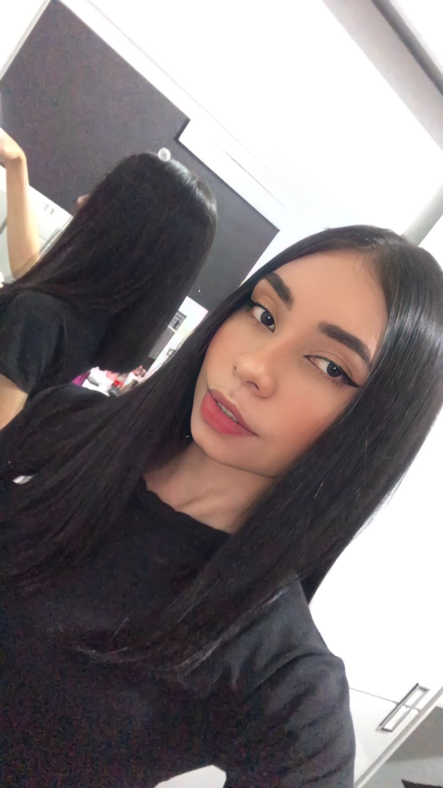

Olá! Seja bem-vinda ao site que criei especialmente para você.
O começo de tudo
Bom, para começar, gostaria de voltar para o dia em que te vi no Instagram pela primeira vez. Eu lembro até hoje de ter te visto e de primeira eu já sabia que queria algo com você.
Então inventei uma desculpa de tatuagem para puxar um papo com você e ele foi bem curto na verdade KKKKKKKKKKKK, mas não foi isso que me fez desistir. Passadas algumas semanas, eu chamei você de novo na DM do Instagram e você me deu um vácuo...
Porém, depois que eu tava quase superando que você tava cagando pra mim, você posta aquela maldita foto:

Isso me fez decidir tentar uma última vez e, verdadeiramente, foi a melhor decisão que eu fiz.
Conhecendo mais um do outro e descobrindo nossa conexão
Depois disso a gente foi se conhecendo cada vez mais e eu percebendo que o que eu estava sentindo por você (que naquele momento eu não sabia o que era exatamente) aumentava a cada conversa boba que a gente tinha.
Fomos descobrindo que temos muito em comum, compartilhando experiências e gostos, e assim, criando aos poucos uma conexão que viria a ser a maior e mais profunda que eu já tive em minha vida.
Então, eu comecei a perder a timidez que sempre tive ao falar com as pessoas, pedindo até mesmo para a gente conversar em ligação no whats, lembra? Aquelas que duravam 5 minutinhos mas que faziam o meu dia, que faziam meu coração palpitar ao perceber que você também estava começando a sentir algo por mim.
Nós conversávamos quase todos os dias o que, para mim, é um milagre porque nunca gostei de conversar pelo whats, muito menos todo dia e ainda com a mesma pessoa, mas você mesmo que recém-chegada na minha vida conseguiu isso e tantas outras coisas de mim.
O tão esperado momento
Após passado um tempo, a gente começa a ter papos mais íntimos, mostrando um ao outro o desejo que ambos tinham, até marcarmos o nosso primeiro encontro.
Aquele dia para mim foi mágico, todos os acontecimentos fizeram com que ele fosse inesquecível. Este foi o dia do nosso primeiro beijo: 27/11/2021.
Imagem do dia 27/11/2021 capturada pela NASA.
Depois desse beijo, eu sabia que queria você pra mim e estava disposto a fazer tudo o que fosse preciso pra conseguir isso. Continuamos a conversar todos os dias, e a vontade de dizer "aquela frase" aumentava a cada dia, mas eu tinha que manter a naturalidade KKKKKKKKKKKKK.
A frase
Criamos até um servidor no Discord pra escutar música juntos, o que foi algo muito foda já que nossos gostos musicais são bem parecidos. Foi numa dessas vezes que você usou o bot de música e colocou aquela música que eu amava e saber que você gostava também me deixou muito feliz.
Escuta aí, é só o refrãozin hihi
Mas como se não bastasse, às 1:51 do dia 13/12/2021 você, ao som da primeira música que consideramos nossa, me disse “te amo”:
Imagem do dia 13/12/2021 capturada pela NASA. (A imagem desse dia podia ser um pouquinho melhor né, mas tudo bem)
Lembro até hoje da sensação, porque eu finalmente podia tirar aquilo do meu peito e dizer que te amava, aliás, mais do que você podia imaginar.
Aquela madrugada foi literalmente mágica pra mim, ficamos até 4:00 e pouco da manhã escutando música juntos e conversando... enfim, mais um dia perfeito com você e que ficou marcado no meu coração.
Mergulhando de cabeça
A partir daí, tudo se encaminhou muito rapidamente. O que pra mim foi ótimo porque sempre fui muito intenso nos meus sentimentos, então saber que eu tava me aproximando tanto de uma pessoa como você e que o sentimento que eu tinha por ela era recíproco foi muito gratificante.
A cada nova experiência que eu tinha contigo: conhecer minha sogrinha linda e o João; conhecer seu pai e a sua família; os nossos jantares fora; as conversas mais rasas que a gente ama e até as conversas mais profundas me fizeram perceber que era você que eu queria ter do meu lado.
Foi naquele dia na piscina da casa do seu tio depois do nosso papo sobre o dia que nos conhecemos e tudo mais, que a melhor ideia que eu já tive surgiu na minha mente: pedir a Nathaly em namoro.
O pedido
Foi uma correria que você não tem noção, pensando em como iria fazer isso da melhor forma e combinar com a sua mãe sem que você soubesse, comprar a aliança e ensaiar como ia falar pra você.
Pra você ter ideia, nós tivemos a conversa que me gerou a ideia no domingo, e nesse mesmo dia ainda eu já tinha chamado meus pais para conversar e perguntei para a sua mãe o que ela achava da ideia.
Então, depois de alguns dias de combinação, compras de aliança e afins, chegou o tão esperado dia: o dia em que eu te pedi em namoro. Eu estava extremamente nervoso e ansioso (quase não sou normalmente né), à beira do surto KKKKKKKKKKKK. Mas graças a Deus tudo ocorreu bem e a sua espera por uma aliança finalmente havia chegado ao fim no dia 26/01/2022.
Imagem do dia 26/01/2022 capturada pela NASA.
Para terminar
Eu realmente não sei como terminar esse artigo sobre a gente porque não tenho nem palavras pra expressar o que sinto por você, mas vamos tentar né.
Você foi a pessoa que marcou o ano de 2021, um ano tão ruim pra mim, da melhor forma possível, veio do nada e me conquistou com tudo. Em todos os aspectos, desde físicos até a sua essência e jeitinhos eu me apaixonei por você.
Parece clichê mas você me fez retomar à minha melhor versão de mim mesmo, me fazendo feliz e estando sempre lá por mim.
Me convenceu a jogar Free Fire, a escutar sertanejo, a assistir Euphoria e até crepúsculo, porque tudo ao seu lado é extremamente especial. Eu considero a sua companhia como meu lar fora da minha casa, o seu abraço, o seu beijo, o seu carinho são meu combustível pra ter um dia e uma semana melhor.
Quando eu estou longe de você, eu sinto saudades ao mesmo tempo que não sinto, pois, pra mim, você sempre vai estar pertinho de mim. Te levo comigo para todo lugar, no meu pensamento e no meu coração.
Espero que tenha gostado desse site que fiz especialmente pra você, deu trabalho não vou mentir, mas acredito que tenha valido a pena.
"Se por te beijar tivesse que ir depois para o inferno, eu faria isso. Assim poderei me gabar aos demônios de ter estado no paraíso sem nunca entrar." —William Shakespeare.